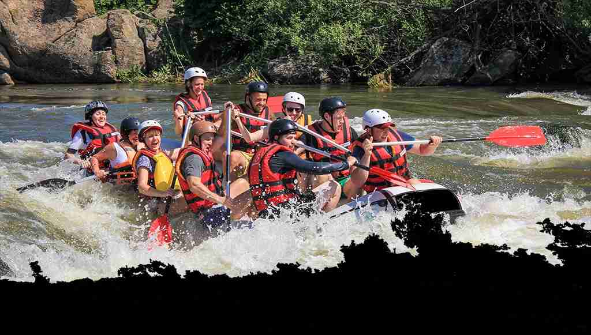

WDD 130 - White Water Rafting
Olá! Meu nome é Carla Nunes Almeida Lopes, sou estudante do curso WDD 130 e este site foi desenvolvido como parte do meu aprendizado em desenvolvimento web, com foco em criar uma experiência digital incrível para os amantes de rafting.
Você está pronto para viver momentos inesquecíveis e sentir a adrenalina correr pelas veias? seu próximo destino de diversão já está traçado! Prepare-se para desbravar a natureza de um jeito que você nunca viu!
Não deixe para depois a história que você pode viver hoje. Junte a família, traga o espírito de aventura e venha remar com a gente! Reserve sua vaga agora e garanta o seu lugar nessa correnteza!

A aventura está te esperando!

Botes da mais alta qualidade

Trecho do percurso

Água sem modificações

Instrutor te guiando

Experiência para toda a família